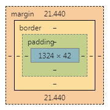

原文出处:本文由博客园博主勾践提供。
原文连接:https://www.cnblogs.com/goujian/p/11594982.html
原文连接:https://www.cnblogs.com/goujian/p/11594982.html
html平时常见的块元素有：div, p, h1, h2, h3等，内联元素有：span, a, img等。
块元素的属性：无论内容是什么，都会独占一整行。主要用于页面布局。
内联元素的属性：只占自身大小的元素，不会占用一行。主要用于选中文本设置样式。
div块元素仅仅只用于进行页面布局，它自身不带任何默认样式。
span内联元素可以用来选中文本设置文本的样式，其自身不会带默认样式。
一般情况下，只使用块元素包含内联元素，而不会使用内联元素去包含块元素。
a元素可以包含任意元素，除了其本身。
p元素不可包含任何的块元素。
块元素之div：<br>
<div style="background-color: blueviolet">div 噫吁嚱，危乎高哉！蜀道之难，难于上青天！蚕丛及鱼凫，开国何茫然！</div>
<div style="background-color: blue">div 噫吁嚱，危乎高哉！蜀道之难，难于上青天！蚕丛及鱼凫，开国何茫然！</div>
<div style="background-color: chartreuse">div 噫吁嚱，危乎高哉！蜀道之难，难于上青天！蚕丛及鱼凫，开国何茫然！</div>
<div style="background-color: chocolate; width: 300px;">div width=300px 噫吁嚱，危乎高哉！蜀道之难，难于上青天！蚕丛及鱼凫，开国何茫然！</div>
<div style="background-color: blue; width: 500px;">div width=500px 噫吁嚱，危乎高哉！蜀道之难，难于上青天！蚕丛及鱼凫，开国何茫然！</div>
块元素之p：<br>
<p style="background-color: blue">p 尔来四万八千岁，不与秦塞通人烟。西当太白有鸟道，可以横绝峨眉巅。</p>
<p style="background-color: chocolate">p 尔来四万八千岁，不与秦塞通人烟。西当太白有鸟道，可以横绝峨眉巅。</p>
<p style="background-color: chartreuse">p 尔来四万八千岁，不与秦塞通人烟。西当太白有鸟道，可以横绝峨眉巅。</p>
<p style="background-color: green; width: 300px;">p width=300px 尔来四万八千岁，不与秦塞通人烟。西当太白有鸟道，可以横绝峨眉巅。</p>
<p style="background-color: red; width: 500px;">p width=500px 尔来四万八千岁，不与秦塞通人烟。西当太白有鸟道，可以横绝峨眉巅。</p>
块元素之h(h1, h2, h3)：<br>
<h1 style="background-color: red">h1 蜀道难</h1>
<h2 style="background-color: green">h2 蜀道难</h2>
<h3 style="background-color: blue">h3 蜀道难</h3>
<h3 style="background-color: pink; width: 300px;">h3 width=300px 蜀道难</h3>
<h3 style="background-color: yellow; width: 500px;">h3 width=500px 蜀道难</h3>
内联元素之span：<br>
<span style="background-color: red">西当太白有鸟道，可以横绝峨眉巅。</span>
<span style="background-color: green">西当太白有鸟道，可以横绝峨眉巅。</span>
<span style="background-color: blue">西当太白有鸟道，可以横绝峨眉巅。</span>
<br>内联元素之a：<br>
<a href="#" style="background-color: yellow">地崩山摧壮士死，然后天梯石栈相钩连。</a>
<a href="#" style="background-color: blue">地崩山摧壮士死，然后天梯石栈相钩连。</a>
<a href="#" style="background-color: red">地崩山摧壮士死，然后天梯石栈相钩连。</a>
<a href="#" style="background-color: green">地崩山摧壮士死，然后天梯石栈相钩连。</a>效果显示（默认在谷歌浏览器下）：
从上面的效果图中，可以看出，有些块元素和内联元素会自带默认样式，比如：p, h1, h2, h3
p自带默认样式为：
p {
display: block;
margin-block-start: 1em;
margin-block-end: 1em;
margin-inline-start: 0px;
margin-inline-end: 0px;
}
h1自带默认样式：
h1 {
display: block;
font-size: 2em;
margin-block-start: 0.67em;
margin-block-end: 0.67em;
margin-inline-start: 0px;
margin-inline-end: 0px;
font-weight: bold;
}
h2自带默认样式：
h2 {
display: block;
font-size: 1.5em;
margin-block-start: 0.83em;
margin-block-end: 0.83em;
margin-inline-start: 0px;
margin-inline-end: 0px;
font-weight: bold;
}
h3自带默认样式：
h3 {
display: block;
font-size: 1.17em;
margin-block-start: 1em;
margin-block-end: 1em;
margin-inline-start: 0px;
margin-inline-end: 0px;
font-weight: bold;
}
当然还有body元素也会带默认样式：
body {
display: block;
margin: 8px;
}